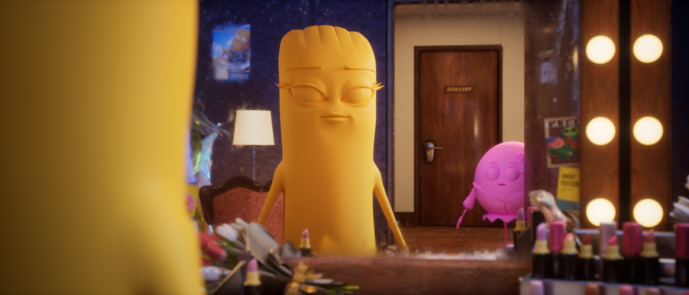

An overview of Unreal Engine projects covering MetaHumans and environment builds. Work involves different roles on each project, handling both the technical and visual sides of production.
Layout, Lighting, Camera work, Rendering / Aras Design & Motion & XLAB / 2023 – 2025
Responsible for lighting, rendering, and camera work for these environment projects, which were rendered in Unreal Engine (excluding the Traveloka project). The process involved establishing the initial scene blocking for both assets and cameras. Further responsibilities included defining camera specifications, directing camera movement, and executing in-engine editing using Sequencer.
This project was done in Cinema 4D. Work focused entirely on handling the asset layout and setting up the staging for every scene.

This was our first internal project in Unreal Engine, serving as an exploration into rendering workflows using the engine's Path Tracer.